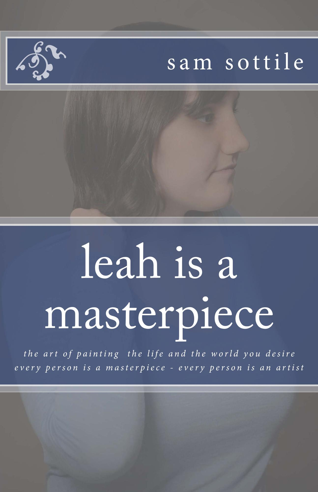
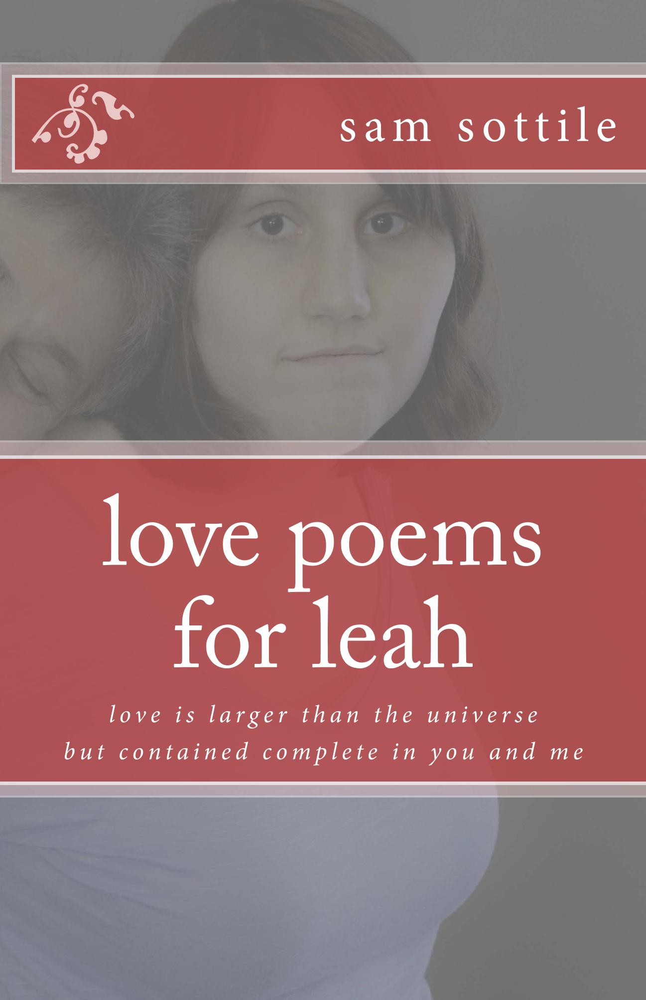
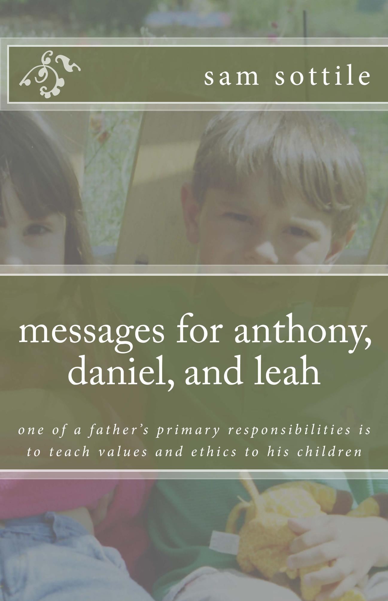

Leah’s story is quite beautiful, the ultimate paradox of a special needs person and her family. Leah is a spectacular individual just as she is, but I cannot help imagining what she might have been and how much the world is missing.
All proceeds from the Leah Books will go to her special needs trust fund.

“every person is a masterpiece - every person is an artist”
Leah is a Masterpiece is a collection of poetry about
creating the world you desire and the person that you wish to be.
Through life’s journey of development – empowerment of the
individual, living and loss, extraordinary experiences, world in
pain, and living beyond – the poems explore the connection of all
things to each other, to the past, and to the future, then hands the
paint brush to you, the reader, to create our tomorrow.

“love is larger than the universe, but contained complete in you
and me”
Love Poems for Leah is a collection of poems that
illustrates love’s potential to connect two souls together and
empower them to create much more than the sum of their individual
capabilities. Through its journey – awakening love, intense love,
love empowering, heartbreak, and love of family and friends – the
heart soars, crashes, grows, and inspires.

“one of a father’s primary responsibilities is to teach values
and ethics to his children”
Messages for Anthony, Daniel, and Leah tells the story of an
empowering philosophy of living as explained by a father to his
children through nightly discussions of quotations. Follow their
journey of development – discussions with my children, making the
world a better place, love and relationships, the power of the
individual, live life to the fullest, the individual as an artist –
as some of the more beautiful ideas that humanity has engendered are
explained in the father’s own words to his children.
Much of my life and energy is focused on caring for my daughter
Leah, a young adult who is non-verbal with severe or “classic”
autism. She has unique needs, and these stories are about the
discovery of those needs and the adaptations of my behavior to
better care for her.
Through understanding that Leah (like every other person) is a
Masterpiece, defined by her individual characteristics, rather than
possessing the characteristics of a label, we can learn her
language, her motivations, and love her deeply for exactly who she
is.
My history has equipped me to handle whatever comes our way.
Certainly, ever since a turning point admonishment/encouragement
from my late father at the age of 16 and probably even before that,
I have been an “active actor” in life as opposed to a “passive
participant”.
These are the common themes in all of the books of this series: the
choices that we make to live one way or the other, the ability to
shape the world around us, the power that each individual has to
define themselves and create meaning, the importance of every
moment, and the unbreakable connection between all things past,
present, and future.